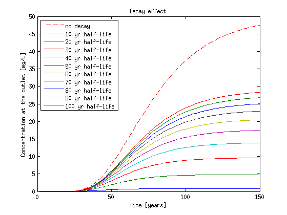
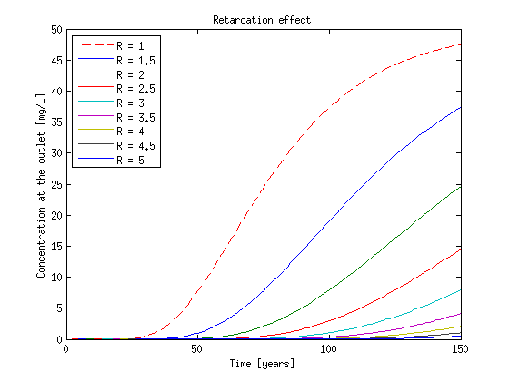
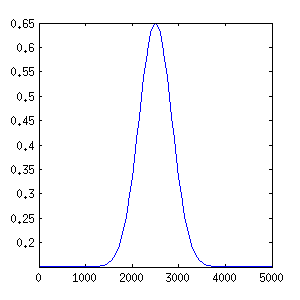
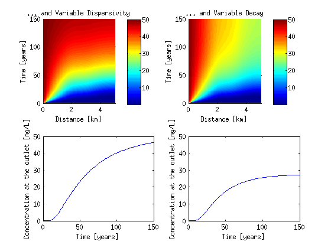

Transport simulation in 1D
| main | Tutorials | Functions | website |
This example illustrates how to use msim functions to solve 1D ADE. The solution of 1D ADE is an important part in streamline modeling. Besides showing the msim functions we perform a small analysis on the parameters of the ADE.
Contents
Problem Description
The domain of the problem is a line 5 km long.
L = 5000;
We will discretize the domain into 50 m linear line elements. Therefore the coordinates of the points are
p = ( 0:50:L )'; Np = size(p, 1);
Next we define the 1D mesh. To generate a uniform 1D mesh we do not need any special software, however we need to create a structure variable to hold the mesh information, similar to the one we use in more complex meshes. The first 2 lines of code are not used and descibe the 0 dimension elements e.g. boundary points. (We could set MSH(1,1) = []; instead)
MSH(1,1).elem(1,1).type = 'Bndpnt'; MSH(1,1).elem(1,1).id = [1;Np]; MSH(2,1).elem(1,1).type = 'line'; MSH(2,1).elem(1,1).id = [(1:Np-1)' (2:Np)']; Nel = size(MSH(2,1).elem(1,1).id,1);
For initial conditions we will use a constant concentration of of 50 mg/L on the first node with id 1
CC = [1 50];
The initial distribution of the concentration will be zero
Cinit = zeros(Np, 1);
and we will run the simulation for 150 years with yearly step
T = (0:150)'*365;
Since we do not have any input/output flows we set a vector of zeros
F = sparse(Np,1);
and we will use the crank Niclolson scheme
wmega = 0.5;
Last we will define few simulation options
opt.dim=1; % This is the dimension of the problem opt.el_type='line'; %the element type opt.el_order='linear';% the element order (linear is the only valid option) opt.assemblemode='vect';% theis is the mode. (use always vectorized option) opt.capacmode='consistent';% option regarding the capacitance matrix (other option is 'lumped')
Constant transport parameters, no decay, no retardation
The most simple transport case is the one where all transport properties are constant. In addition no retardation or decay is considered.
aL = 500; %[m] longitudinal dispersivity v = 0.15; %[m/day] velocity lambda = 0; %[1/day] radioactive decay K_d = 0; %[m^3/Kg] equilibrium distribution coefficient rho_b = 1;% bulk density Dm = 1.1578e-004;%[m^2/day] Molecular diffusion coefficient theta = ones(Nel,1);
To assemble the mass and dispersivity matrix we call the function
[Dglo, Mglo, c]= Assemble_LHS_std(p, MSH(2,1).elem(1,1).id,...
aL, v, rho_b, K_d, lambda, theta, Dm, CC, opt);
... and we are ready to solve the transport equation
C1 = SteadyFlowTransport(Mglo, Dglo, F, Cinit, T, c, wmega);
Plotting concentration profiles and the breakthrough curve at the outlet in matlab is easy
figure('Position',[100 100 660 220]) subplot(1,2,1); surf(p/1000,T(2:end)/365,C1,'edgecolor','none') view(0,90) axis([0 5 0 150]) xlabel('Distance [km]') ylabel('Time [years]') colorbar subplot(1,2,2) plot(T(2:end)/365,C1(:,end)) xlabel('Time [years]') ylabel('Concentration at the outlet [mg/L]')
Constant transport parameters, with decay and retardation
Now let's examine the effect of decay and retardation on the previous problem. lambda is usually defined as ln(2)/half-life. The code below iterates through various lambda coefficients that correspond to different half-life times. The snippet below defines an array of half lifes which then converted to array of lambdas and finally for display purposes a variable that will hold the legend names isi initialized. Then the codes llops and solve the ADE for each lambda value and then the results are plotted.
half_life = [10:10:100]*365; lambda = log(2)./half_life; clear lgnd lgnd{1,1} = 'no decay'; for i = 1:length(lambda) [Dglo Mglo c]= Assemble_LHS_std(p, MSH(2,1).elem(1,1).id,... aL, v, rho_b, K_d, lambda(i), theta, Dm, CC, opt); c_temp = SteadyFlowTransport(Mglo, Dglo, F, Cinit, T, c, wmega); C_lmbd(:,i) = c_temp(:,end); lgnd{i+1,1} = [num2str(half_life(i)/365) ' yr half-life']; end figure('Position',[100 100 560 420]) plot(T(2:end)/365,C1(:,end),'--r') hold on plot(T(2:end)/365,C_lmbd) xlabel('Time [years]') ylabel('Concentration at the outlet [mg/L]') title('Decay effect') legend(lgnd,'Location','NorthWest') hold off
Next we will set the the decay equal to zero and solve the ADE for different retardation values
lambda = 0; K_d = [0.5:0.5:4]; clear lgnd lgnd{1,1} = 'R = 1'; for i = 1:length(K_d) [Dglo Mglo c]= Assemble_LHS_std(p, MSH(2,1).elem(1,1).id,... aL, v, rho_b, K_d(i), lambda, theta, Dm, CC, opt); c_temp = SteadyFlowTransport(Mglo, Dglo, F, Cinit, T, c, wmega); C_rtrd(:,i) = c_temp(:,end); lgnd{i+1,1} = ['R = ' num2str(1+K_d(i))]; end clf plot(T(2:end)/365,C1(:,end),'--r') hold on plot(T(2:end)/365,C_rtrd) xlabel('Time [years]') ylabel('Concentration at the outlet [mg/L]') title('Retardation effect') legend(lgnd,'Location','NorthWest')
Variable transport parameters
Finally let's see how to use variable parameters. We set the velocity to be a function of x as follows:
V_fnc = inline('0.5*exp(-((x-2500)/500).^2)+0.15'); % Therefore the velocity profile along the domain is: V_nd = V_fnc(p); figure('Position',[100 100 300 300]) plot(p, V_fnc(p));
We can solve ADE with variable velocity by simply passing the velocity matrix as agrument
%------------ The code to solve ADE starts here-------------- K_d = 0; [Dglo Mglo c]= Assemble_LHS_std(p, MSH(2,1).elem(1,1).id,... aL, V_fnc(p), rho_b, K_d, lambda, theta, Dm, CC, opt); C_v = SteadyFlowTransport(Mglo, Dglo, F, Cinit, T, c, wmega); %------------ The code to solve ADE ends here.-------------- %------------The code below this point is about plotting--------------- figure('Position',[100 100 560 420]) subplot(2,2,1); surf(p/1000,T(2:end)/365,C1,'edgecolor','none') view(0,90) axis([0 5 0 150]) xlabel('Distance [km]') ylabel('Time [years]') title('Constant parameters') colorbar subplot(2,2,2); surf(p/1000,T(2:end)/365,C_v,'edgecolor','none') view(0,90) axis([0 5 0 150]) xlabel('Distance [km]') ylabel('Time [years]') title('Variable Velocity') colorbar subplot(2,2,3); plot(T(2:end)/365,C1(:,end)) xlabel('Time [years]') ylabel('Concentration at the outlet [mg/L]') axis([0 150 0 50]) subplot(2,2,4); plot(T(2:end)/365,C_v(:,end)) xlabel('Time [years]') ylabel('Concetration at the outlet [mg/L]') axis([0 150 0 50])
Next lets define some other transport properties as function of x. Note that typically these do not make sence in real cases end we do that for illustration purposes.
Let the longitudinal dispersivity be a linear function of x which varies from 200 m at the inlet to 5000 m at the outlet.
aL_fnc = inline('200+x*0.96');
Again we solve this in similar way
[Dglo Mglo c]= Assemble_LHS_std(p, MSH(2,1).elem(1,1).id,...
aL_fnc(p), V_fnc(p), rho_b, K_d, lambda, theta, Dm, CC, opt);
C_aL = SteadyFlowTransport(Mglo, Dglo, F, Cinit, T, c, wmega);
Finally Now lets define a variable decay. We assume that the decay is zero for the first half of the domain and then equals to 30 years half-life.
lmd_fnc = inline('(x>2500)*log(2)/(30*365)'); [Dglo Mglo c]= Assemble_LHS_std(p, MSH(2,1).elem(1,1).id,... aL_fnc(p), V_fnc(p), rho_b, K_d, lmd_fnc(p), theta, Dm, CC, opt); C_lmd = SteadyFlowTransport(Mglo, Dglo, F, Cinit, T, c, wmega);
To code below plots the above results
figure('Position',[100 100 560 420]) subplot(2,2,1); surf(p/1000,T(2:end)/365,C_aL,'edgecolor','none') view(0,90) axis([0 5 0 150]) xlabel('Distance [km]') ylabel('Time [years]') title('... and Variable Dispersivity') colorbar subplot(2,2,2); surf(p/1000,T(2:end)/365,C_lmd,'edgecolor','none') view(0,90) axis([0 5 0 150]) xlabel('Distance [km]') ylabel('Time [years]') title('... and Variable Decay') colorbar subplot(2,2,3); plot(T(2:end)/365,C_aL(:,end)) xlabel('Time [years]') ylabel('Concentration at the outlet [mg/L]') axis([0 150 0 50]) subplot(2,2,4); plot(T(2:end)/365,C_lmd(:,end)) xlabel('Time [years]') ylabel('Concentration at the outlet [mg/L]') axis([0 150 0 50])